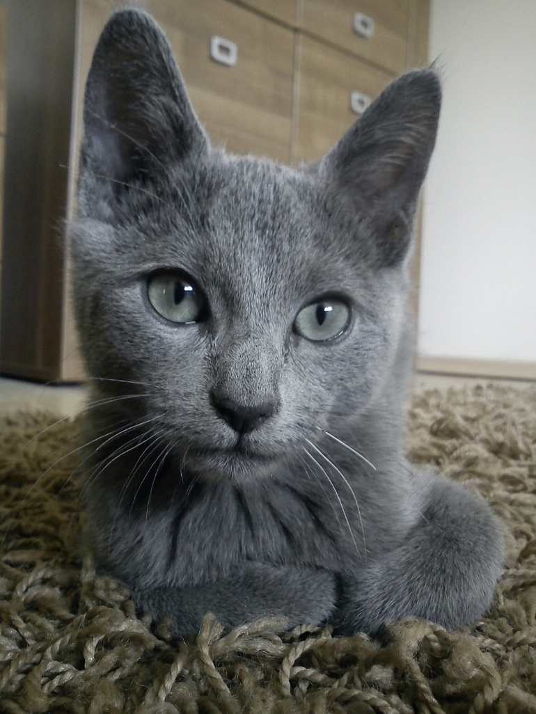

KOT
 Kot domowy (Felis catus, również Felis silvestris catus) – udomowiony gatunek ssaka z rzędu drapieżnych z rodziny kotowatych. Koty zostały udomowione około 9500 lat temu[4] i są obecnie najpopularniejszymi zwierzętami domowymi na świecie[5]. Gatunek ten prawdopodobnie pochodzi od kota nubijskiego, przy czym w Europie krzyżował się ze żbikiem. Przez IUCN/SSC jest uznawany za gatunek inwazyjny.
Przodkiem kota domowego jest kot nubijski[7] – według poglądów większości współczesnych naukowców różnice pomiędzy kotem domowym i nubijskim są tak niewielkie, że należą one do tego samego gatunku. Istnieją rozbieżności w kwestii daty udomowienia kota. Większość źródeł sugeruje lata 4000–3700 p.n.e., a miejscem, w którym miało do tego dojść, była Nubia. Istnieją jednak dowody (grób mężczyzny z kotem[8] z Cypru sprzed ok. 7500 r. p.n.e.), że domestykacja kota zaczęła się znacznie wcześniej (około 9500 lat temu) i trwała kilka tysięcy lat, a jej miejscem był obszar Żyznego Półksiężyca w Azji Zachodniej. Już ok. 2000 r. p.n.e. kot był pospolicie hodowany w starożytnym Egipcie, gdzie był zwierzęciem świętym, utożsamianym z boginią Bastet, a zwłoki kotów mumifikowano. Również Germanie kojarzyli go ze swoją boginią płodności Freją, która jeździła powozem zaprzężonym w te zwierzęta. Później zaczęto wykorzystywać go do tępienia gryzoni. Od momentu swego udomowienia kot stał się bohaterem licznych baśni i mitów. Wyhodowano wiele ras kota domowego, różniących się ubarwieniem, wielkością i długością włosów; współczesne wzorce niektórych starszych ras znacznie odbiegają od ich wcześniejszych cech (jak w przypadku kotów perskich czy syjamskich).